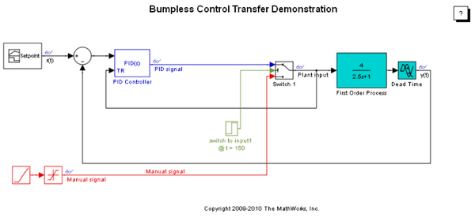
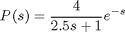
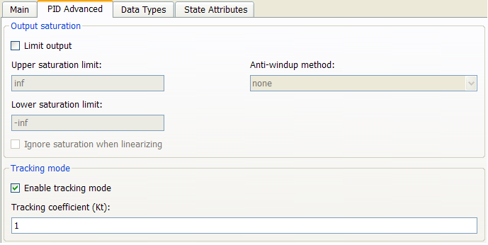
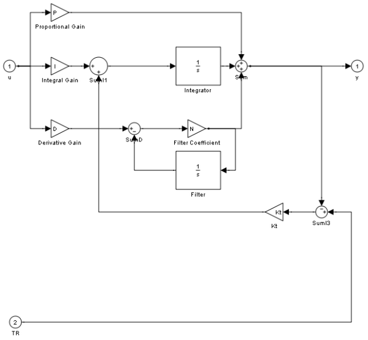
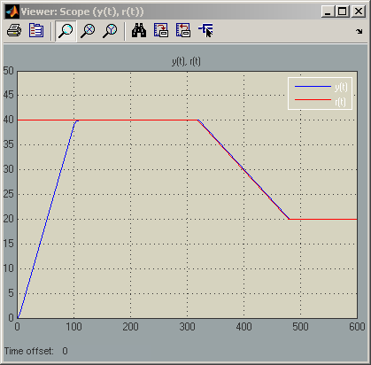
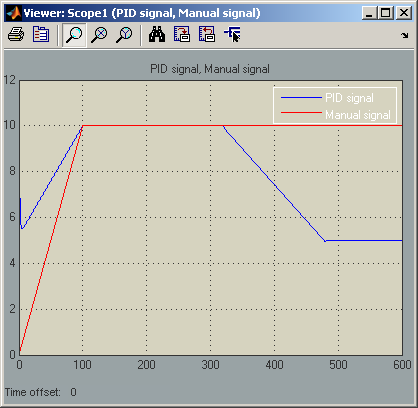
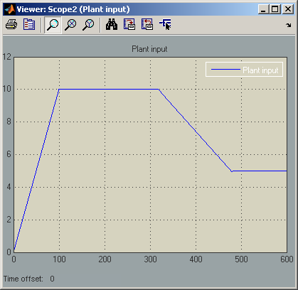
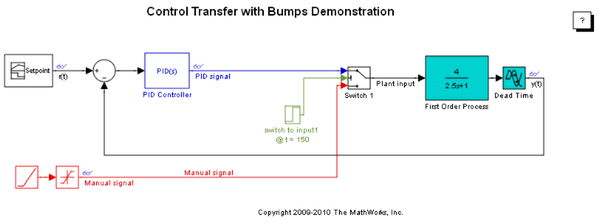
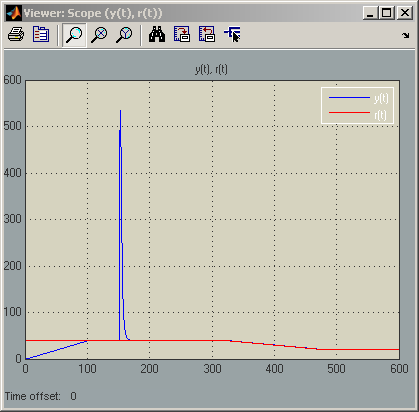
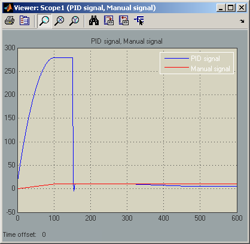

Bumpless Control Transfer Between Manual and PID Control
Contents
Model Description
This demo illustrates how to use the PID Controller block in Simulink® to control a first-order process with dead-time, and to achieve bumpless control transfer when switching from manual control to PID control.
We start by opening the model.
Figure 1: Simulink model of PID control with bumpless transfer.
To open this model, type sldemo_bumpless in a MATLAB® terminal.
The PID Controller has been tuned with saturation ignored using the PID tuner of Simulink® Control Design™.
The controlled plant is a first-order process with dead-time described by

For several operational reasons, the engineers decided to start the control process in an open-loop manner by feeding the plant input with a saturating ramp signal to drive the output of the plant slowly to a desired steady-state value of 40. A control transfer is scheduled to happen a t = 150. This transition between open-loop control and closed-loop control therefore involves two control phases of operation:
- Manual: A saturated ramp signal feeds the plant input during start-up until t = 150.
- Automatic: A PID controller will engage the plant at t = 150, and must take over the process without introducing bumps at the plant input.
To support smooth control transition, the PID Controller block supports two modes of operation: a tracking mode and a control mode. In control mode, the PID Controller block operates as an ordinary PID controller. In tracking mode, however, the block has an extra input that allows the PID block to adjust its internal state by changing its integrator output so that the block output tracks a prescribed signal feeding this extra input port.
To achieve bumpless control transfer, the PID Controller block must be in tracking mode when the plant is in the manual control phase (open-loop control), and in control mode when the plant is in the automatic control phase (closed-loop control).
Configuring the Block for Tracking Mode
To activate signal tracking, go to the PID Advanced tab in the block's dialog; select Enable tracking mode, and specify the gain Kt. The inverse of this gain is the time constant of the tracking loop. For more information on how to choose this gain, see Reference [1].

Figure 2: Enabling the tracking mode of the PID Controller block.
As shown in Figure 1, once tracking mode is enabled, the block has a second input port denoted by TR. Internally this new port is wired as shown under mask:
Figure 3: Under-mask view of the PID Controller block with tracking mode.
Setting Up the Switching Mechanism
In addition to enabling tracking mode for the PID Controller block, a switching mechanism is needed to achieve the control transfer. Switch 1 determines which signal feeds the plant input and feeds the tracking port of the PID Controller block.
At time t = 0, Switch 1 directs the manual control signal to the plant input and the tracking port of the PID Controller block. This allows the output of the PID Controller block to track the manual control signal during the manual phase by adjusting the PID Controller's internal integrator. When control transfer occurs, therefore, the PID Controller output will be approximately the same as the manual control signal.
At time t = 150, Switch 1 switches, directing the output of the PID Controller block to the plant input and the PID Controller block's tracking input. The PID Controller block now tracks its own output, which is equivalent to control mode.
Simulating the Bumpless Control Transfer
The setpoint signal and the closed-loop response of the model are shown in Figure 4.
Figure 4: Setpoint vs. measured output.
Figure 4 clearly shows that the measured output tracks the Setpoint profile without any output bumps at the time of switching (t = 150). To investigate this further, the plant input, control signals are shown in Figure 5.
Figure 5: Control signal switching.
Figure 6: Plant input.
Figures 5 and 6 show that at the switching instance, the plant input has experienced no step changes (bumps), and therefore the control transfer happens in smooth bumpless fashion as intended.
To see the significance of the bumpless transfer setup, consider the case were tracking mode is not used. In this case, the following setup is obtained:
Figure 7: Simulink model of PID control with no bumpless transfer.
To open this model, type sldemo_bumplessno in a MATLAB terminal.
Figures 8 and 9 show the performance in the absence of an appropriate bumpless control transfer strategy.
Figure 8: Setpoint vs. measured output.
Figure 9: Control signal switching.
It is evident from Figures 8 and 9 that allowing the PID controller to float while the plant is under manual control can result in undesirable large transients upon switching.
Summary
As this demo shows, the PID Controller block supports bumpless control transfer through the use of tracking mode.
References
[1] K. Åström, T. Hägglund, Advanced PID Control, ISA, Research Triangle Park, NC, August 2005.